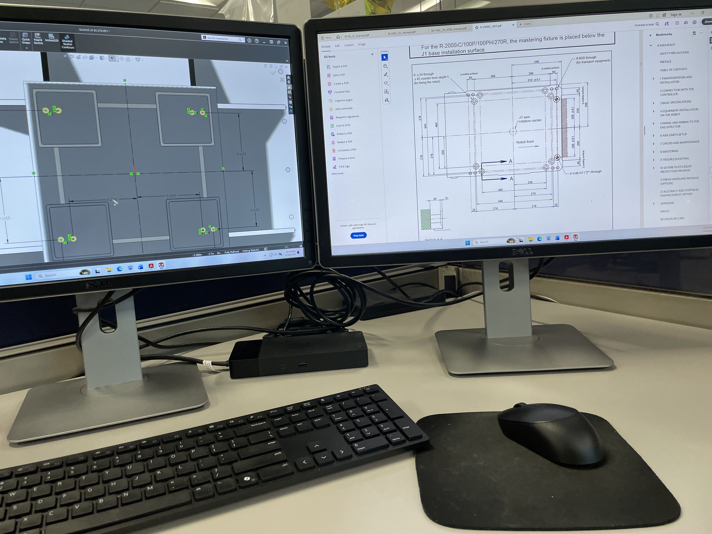
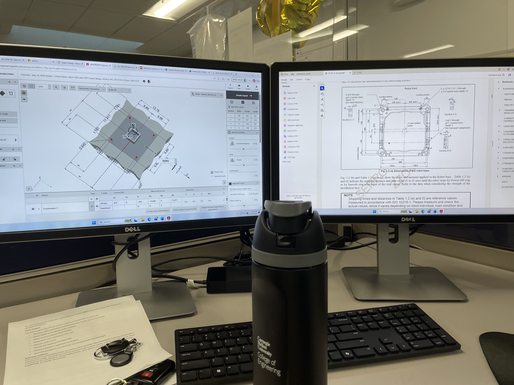
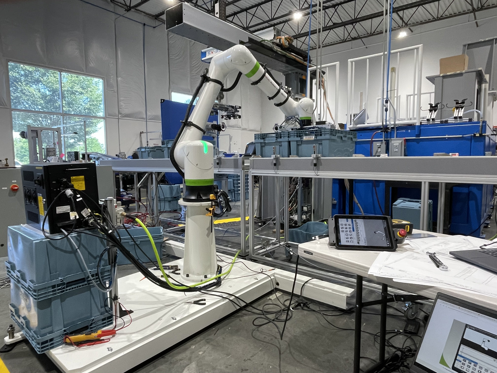

Sepro America
Engineering intern on a robotic production line: PLC logic, cobot programming, structural design, and wiring.
Tote inspection sequence
- Engineered a PLC-based tote inspection sequence (RFID, barcode, and OCR checks on both sides) for a 16-station production scale-out.
- Handled about 15 distinct fail conditions and cut cycle time from 40 to 60s down to under 25s.
This production line extracted plastic totes from their molds, applied dual-sided labels, and performed multi-layer validation to ensure quality. To reduce cycle time, I minimized propagation latency by optimizing the handshake and data transfer code between the robot and PLC. My favorite part of this project was going from feeling overwhelmed, not even knowing how to get data from the RFID scanner, to fully automating the entire tote inspection sequence.
images/sepro-video.mp4
Robot riser attachment
- Designed and validated a new FANUC robot riser attachment for a new base configuration.
- Reached a minimum factor of safety of 4 to 5 with structural FEA in Hilti PROFIS Engineering.
A new riser was needed because my company was switching 6-axis robot brands. I used previous riser designs as a starting point and refined the design around the new screw and bolt placements. I also had to account for the riser's welds and the different overhangs of the new robots, which could block access to certain areas and complicate installation. I verified the design's safety with hand calculations for the overturning moment and anchor bolt pullout from the floor, along with FEA in Hilti PROFIS. My favorite part of this project was seeing what I learned in class actually used to keep the robots safe during emergency stops or with heavier payloads.

images/sepro-2.jpg

images/sepro-3.jpg
Cobot palletizing algorithm
- Wrote a complete palletizing algorithm covering X/Y/Z moment shifts, single and dual tote gripper setups, dynamic stack height, and 0° and 90° tote orientations.
The hardest issue I ran into with this palletizing algorithm was handling an odd number of totes per layer while picking up two totes at a time. This meant I had to account for avoiding the conveyor, handling asymmetric totes, flipping the totes into the right orientation, and placing an extra tote on every even layer. My favorite part of this project was learning to break the problem down into super simple questions after analyzing a large number of issues.

images/sepro-1.jpg
Wiring and fabrication
- Fabricated and wired 20+ industrial cables by crimping and soldering.
- Wired the robot control system from electrical drawings, saving the company over $10,000 in outsourced labor.